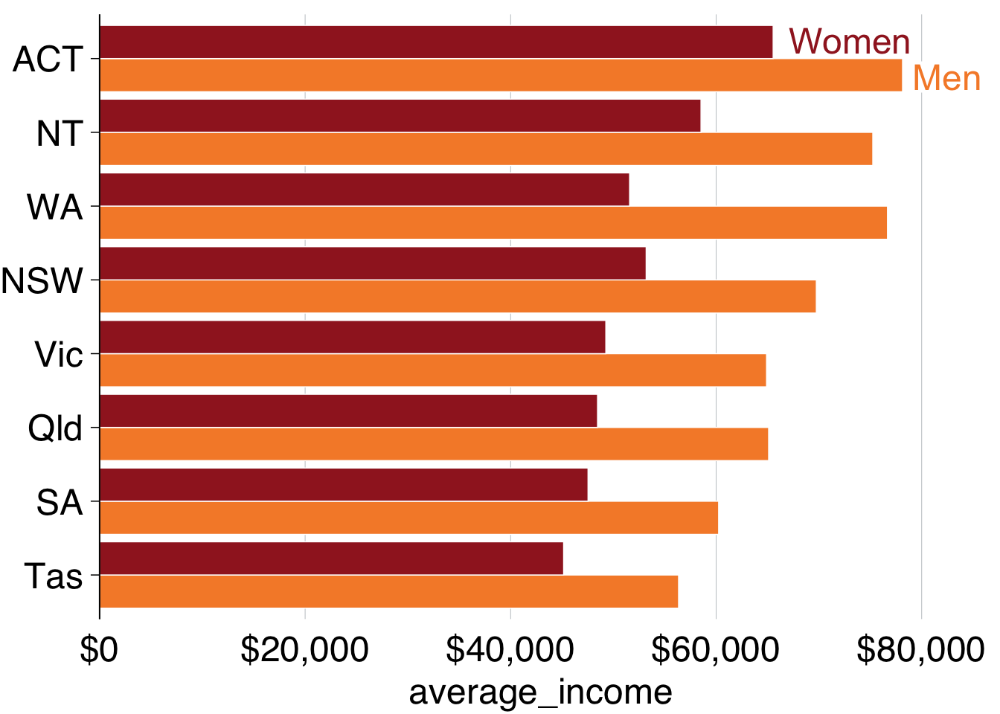
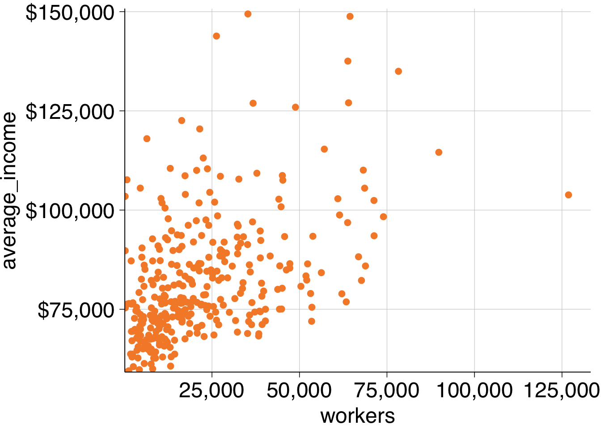
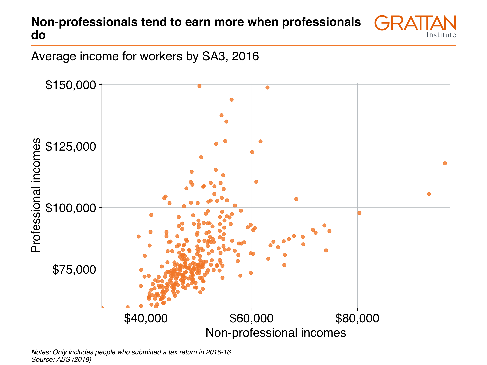

11 Chart cookbook
This section takes you through a few often-used chart types.
11.1 Set up
library(tidyverse)
library(grattantheme)
library(ggrepel)
library(absmapsdata)
library(sf)
library(scales)
library(janitor)
# this might be hairy; should get `grattools` happening:
library(grattan)# note: to be added to grattantheme; remove this when done
grattan_label_repel <- function(..., size = 18) {
.size = size / ggplot2::.pt
geom_label_repel(...,
fill = "white",
label.padding = unit(0.1, "lines"),
label.size = 0,
size = .size)
}
grattan_label <- function(..., size = 18) {
.size = size / ggplot2::.pt
geom_label(...,
fill = "white",
label.padding = unit(0.1, "lines"),
label.size = 0,
size = .size)
}The sa3_income dataset will be used for all key examples in this chapter.16 It is a long dataset from the ABS that contains the median income and number of workers by Statistical Area 3, occupation and sex between 2010 and 2016.
sa3_income <- read_csv("data/sa3_income.csv") %>%
filter(!is.na(median_income),
!is.na(average_income))## Parsed with column specification:
## cols(
## sa3 = col_double(),
## sa3_name = col_character(),
## sa3_sqkm = col_double(),
## sa3_income_percentile = col_double(),
## sa4_name = col_character(),
## gcc_name = col_character(),
## state = col_character(),
## occupation = col_character(),
## occ_short = col_character(),
## prof = col_character(),
## gender = col_character(),
## year = col_double(),
## median_income = col_double(),
## average_income = col_double(),
## total_income = col_double(),
## workers = col_double()
## )## # A tibble: 6 x 16
## sa3 sa3_name sa3_sqkm sa3_income_perc… sa4_name gcc_name state
## <dbl> <chr> <dbl> <dbl> <chr> <chr> <chr>
## 1 10102 Queanbe… 6511. 80 Capital… Rest of… NSW
## 2 10102 Queanbe… 6511. 76 Capital… Rest of… NSW
## 3 10102 Queanbe… 6511. 78 Capital… Rest of… NSW
## 4 10102 Queanbe… 6511. 76 Capital… Rest of… NSW
## 5 10102 Queanbe… 6511. 74 Capital… Rest of… NSW
## 6 10102 Queanbe… 6511. 79 Capital… Rest of… NSW
## # … with 9 more variables: occupation <chr>, occ_short <chr>, prof <chr>,
## # gender <chr>, year <dbl>, median_income <dbl>, average_income <dbl>,
## # total_income <dbl>, workers <dbl>11.2 Bar charts
Bar charts are made with geom_bar or geom_col. Creating a bar chart will look something like this:
ggplot(data = <data>) +
geom_bar(aes(x = <xvar>, y = <yvar>),
stat = <STAT>,
position = <POSITION>
)It has two key arguments: stat and position.
First, stat defines what kind of operation the function will do on the dataset before plotting. Some options are:
"count", the default: count the number of observations in a particular group, and plot that number. This is useful when you’re using microdata. When this is the case, there is no need for ayaesthetic."sum": sum the values of theyaesthetic."identity": directly report the values of theyaesthetic. This is how PowerPoint and Excel charts work.
You can use geom_col instead, as a shortcut for geom_bar(stat = "identity).
Second, position, dictates how multiple bars occupying the same x-axis position will positioned. The options are:
"stack", the default: bars in the same group are stacked atop one another."dodge": bars in the same group are positioned next to one another."fill": bars in the same group are stacked and all fill to 100 per cent.
11.2.1 Simple bar plot
This section will create the following vertical bar plot showing number of workers by state in 2016:

First, create the data you want to plot.
data <- sa3_income %>%
filter(year == 2016) %>%
group_by(state) %>%
summarise(workers = sum(workers))
data## # A tibble: 8 x 2
## state workers
## <chr> <dbl>
## 1 ACT 386989
## 2 NSW 6527661
## 3 NT 206061
## 4 Qld 4104503
## 5 SA 1382446
## 6 Tas 420767
## 7 Vic 5190976
## 8 WA 2297081Looks tip-top: you have one observation (row) for each state you want to plot, and a value for their number of workers.
Now pass the nice, simple table to ggplot and add aesthetics so that x represents state, and y represents workers. Then, because the dataset contains the actual numbers you want on the chart, you can plot the data with geom_col:17

Make it Grattany by adjusting general theme defaults with theme_grattan, and use grattan_y_continuous to change the y-axis. Use labels formatted with commas (rather than scientific notation) by adding labels = comma.
data %>%
ggplot(aes(x = state,
y = workers)) +
geom_col() +
theme_grattan() +
grattan_y_continuous(labels = comma)
To order the states by number of workers, you can tell the x aesthetic that you want to reorder the state variable by workers:
data %>%
ggplot(aes(x = reorder(state, workers), # reorder states by workers
y = workers)) +
geom_col() +
theme_grattan() +
grattan_y_continuous(labels = comma)
You can probably drop the x-axis label – people will understand that they’re states without you explicitly saying it – and add a title and subtitle with labs:
simple_bar <- data %>%
ggplot(aes(x = reorder(state, workers),
y = workers)) +
geom_col() +
theme_grattan() +
grattan_y_continuous(labels = comma) +
labs(title = "Most workers are on the east coast",
subtitle = "Number people in employment, 2016",
x = "",
caption = "Notes: Only includes people who submitted a tax return in 2016-16. Source: ABS (2018)")
simple_barLooks too good to be true! Now you can export as a full-slide Grattan chart using grattan_save:
11.2.2 Bar plot with multiple series
This section will create a horizontal bar plot showing average income by state and gender in 2016:
First create the dataset you want to plot, getting the average income by state and gender in the year 2016:
data <- sa3_income %>%
filter(year == 2016) %>%
group_by(state, gender) %>%
summarise(average_income = sum(total_income) / sum(workers))
data## # A tibble: 16 x 3
## # Groups: state [8]
## state gender average_income
## <chr> <chr> <dbl>
## 1 ACT Men 78141.
## 2 ACT Women 65548.
## 3 NSW Men 69750.
## 4 NSW Women 53191.
## 5 NT Men 75246.
## 6 NT Women 58527.
## 7 Qld Men 65108.
## 8 Qld Women 48458.
## 9 SA Men 60244.
## 10 SA Women 47533.
## 11 Tas Men 56345.
## 12 Tas Women 45158.
## 13 Vic Men 64908.
## 14 Vic Women 49264.
## 15 WA Men 76677.
## 16 WA Women 51578.Looks on fleek: you have one observation (row) for each state \(\times\) gender group you want to plot, and a value for their average income. Put state on the x-axis, average_income on the y-axis, and split gender by fill-colour (fill).
Pass the data to ggplot, give it the appropriate x and y aesthetics, along with fill (the fill colour18) representing gender. And because you have the actual values for average_income you want to plot, use geom_col:19

The two series – women and men – created by fill are stacked on-top of each other by geom_col. You can tell it to plot them next to each other – to ‘dodge’ – instead with the position argument within geom_col:
data %>%
ggplot(aes(x = state,
y = average_income,
fill = gender)) +
geom_col(position = "dodge") # 'dodge' the series
To flip the chart – a useful move when you have long labels – add coord_flip (ie ‘flip the x and y coordinates of the chart’).
However, while the coordinates have been flipped, the underlying data hasn’t. If you want to refer to the average_income axis, which now lies horizontally, you would still refer to the y axis (eg grattan_y_continuous still refers to your y aesthetic, average_income).
data %>%
ggplot(aes(x = state,
y = average_income,
fill = gender)) +
geom_col(position = "dodge") +
coord_flip() # rotate the chart
And reorder the states by average income, so that the state with the highest (combined) average income is at the top. This is done with the reorder(var_to_reorder, var_to_reorder_by) function when you define the state aesthetic:
data %>%
ggplot(aes(x = reorder(state, average_income), # reorder
y = average_income,
fill = gender)) +
geom_col(position = "dodge") +
coord_flip()
Wonderful – that’s how you want our data to look. Now you can Grattanise it. Note that theme_grattan needs to know that the coordinates were flipped so it can apply the right settings. Also tell grattan_fill_manual that there are two fill series.
data %>%
ggplot(aes(x = reorder(state, average_income),
y = average_income,
fill = gender)) +
geom_col(position = "dodge") +
coord_flip() +
theme_grattan(flipped = TRUE) + # grattan theme
grattan_y_continuous(labels = dollar) + # y axis
grattan_fill_manual(2) # grattan fill colours
You can use grattan_label to label your charts in the Grattan style. This function is a ‘wrapper’ around geom_label that has settings that we tend to like: white background with a thin margin, 18-point font, and no border. It takes the standard arguments of geom_label.
Section 10.6 shows how labels are treated like data points: they need to know where to go (x and y) and what to show (label). But if you provide every point to your labelling geom, it will plot every label:
data %>%
ggplot(aes(x = reorder(state, average_income),
y = average_income,
fill = gender)) +
geom_col(position = "dodge") +
coord_flip() +
theme_grattan(flipped = TRUE) +
grattan_y_continuous(labels = dollar) +
grattan_fill_manual(2) +
grattan_label(aes(colour = gender, # colour the text according to gender
label = gender), # label the text according to gender
position = position_dodge(width = 1), # position dodge with width 1
hjust = -0.1) + # horizontally align the label so its outside the bar
grattan_colour_manual(2) # define colour as two grattan colours
To just label one of the plots – ie the first one, ACT in this case – we need to tell grattan_label. The easiest way to do this is by creating a label dataset beforehand, like label_gender below. This just includes the observations you want to label:
## # A tibble: 2 x 3
## # Groups: state [1]
## state gender average_income
## <chr> <chr> <dbl>
## 1 ACT Men 78141.
## 2 ACT Women 65548.So you can pass that label_gender dataset to grattan_label:
data %>%
ggplot(aes(x = reorder(state, average_income),
y = average_income,
fill = gender)) +
geom_col(position = "dodge") +
coord_flip() +
theme_grattan(flipped = TRUE) +
grattan_y_continuous(labels = dollar) +
grattan_fill_manual(2) +
grattan_label(data = label_gender, # supply the new dataset
aes(colour = gender,
label = gender),
position = position_dodge(width = 1),
hjust = -0.1) +
grattan_colour_manual(2)
Almost there! The labels go out of range a little bit, and we can fix this by expanding the plot:
data %>%
ggplot(aes(x = reorder(state, average_income),
y = average_income,
fill = gender)) +
geom_col(position = "dodge") +
coord_flip() +
theme_grattan(flipped = TRUE) +
grattan_y_continuous(labels = dollar,
expand_top = .1) + # expand the plot
grattan_fill_manual(2) +
grattan_label(data = label_gender,
aes(colour = gender,
label = gender),
position = position_dodge(width = 1),
hjust = -0.1) +
grattan_colour_manual(2)
Looks fantastic! Now you can add titles and a caption, and save using grattan_save:
multiple_bar <- data %>%
ggplot(aes(x = reorder(state, average_income),
y = average_income,
fill = gender)) +
geom_col(position = "dodge") +
coord_flip() +
theme_grattan(flipped = TRUE) +
grattan_y_continuous(labels = dollar,
expand_top = .1) +
grattan_fill_manual(2) +
grattan_label(data = label_gender,
aes(colour = gender,
label = gender),
position = position_dodge(width = 1),
hjust = -0.1) +
grattan_colour_manual(2) +
labs(title = "Women earn less than men in every state",
subtitle = "Average income of workers, 2016",
x = "",
y = "",
caption = "Notes: Only includes people who submitted a tax return in 2016-16. Source: ABS (2018)")
11.2.3 Facetted bar charts
‘Facetting’ a chart means you create a separate plot for each group. It’s particularly useful in showing differences between more than one group. The chart you’ll make in this section will show annual income by gender and state, and by professional and non-professional workers:
Start by creating the dataset you want to plot:
data <- sa3_income %>%
group_by(state, gender, prof) %>%
summarise(average_income = sum(total_income) / sum(workers))
data## # A tibble: 32 x 4
## # Groups: state, gender [16]
## state gender prof average_income
## <chr> <chr> <chr> <dbl>
## 1 ACT Men Non-professional 52545.
## 2 ACT Men Professional 96488.
## 3 ACT Women Non-professional 46151.
## 4 ACT Women Professional 79828.
## 5 NSW Men Non-professional 49182.
## 6 NSW Men Professional 91624.
## 7 NSW Women Non-professional 36772.
## 8 NSW Women Professional 68445.
## 9 NT Men Non-professional 58844.
## 10 NT Men Professional 87666.
## # … with 22 more rowsThen plot a bar chart with geom_col and theme_grattan elements, using a similar chain to the final plot of 11.2.2 (without the labelling). We’ll build on this chart:
facet_bar <- data %>%
ggplot(aes(x = reorder(state, average_income),
y = average_income,
fill = gender)) +
geom_col(position = "dodge") +
coord_flip() +
theme_grattan(flipped = TRUE) +
grattan_y_continuous(labels = dollar,
expand_top = .1) +
grattan_fill_manual(2) +
grattan_colour_manual(2) +
labs(title = "Professional workers earn more in every state",
subtitle = "Average income of workers, 2016",
x = "",
y = "",
caption = "Notes: Only includes people who submitted a tax return in 2016-16. Source: ABS (2018)")You can ‘facet’ bar charts – and any other chart type – with the facet_grid or facet_wrap commands. The latter tends to give you more control over label placement, so let’s start with that. fadcet_wrap asks the questions: “what variables should I create separete charts for”, and “how should I place them on the page”? Tell it to use the prof variable with the vars() function.20

That’s good! It does what it should. Now you just need to tidy it up a little bit by adding labels and avoiding clashes along the bottom axis.
Create labels in the same way you have done before: you only want to label one ‘women’ and ‘men’ series, so create a dataset that contains only that information:
## # A tibble: 2 x 4
## # Groups: state, gender [2]
## state gender prof average_income
## <chr> <chr> <chr> <dbl>
## 1 ACT Men Non-professional 52545.
## 2 ACT Women Non-professional 46151.Good – now add that to the plot with grattan_label, supplying the required aesthetics and position. And use hjust = 0 to tell the labels to be left-aligned.
To give each plot a black base axis, you can add geom_hline() with yintercept = 0.
facet_bar +
facet_wrap(vars(prof)) +
geom_hline(yintercept = 0) + # add black line
grattan_label(data = label_data, # supply label data
aes(label = gender,
colour = gender),
position = position_dodge(width = 1),
hjust = 0)Out of this world! But the “$0” and “$100,000” labels are clashing along the horizontal axis. To tidy these up, we redefine the breaks – the points that will be labelled – to 25,000, 50,000 and 75,000 inside grattan_y_continuous. Putting everything together and saving the plot as a fullslide chart with grattan_save:
# Create label data
label_data <- data %>%
filter(state == "ACT",
prof == "Non-professional")
# Create plot
facet_bar <- data %>%
ggplot(aes(x = reorder(state, average_income),
y = average_income,
fill = gender)) +
geom_col(position = "dodge") +
coord_flip() +
theme_grattan(flipped = TRUE) +
grattan_y_continuous(labels = dollar,
breaks = c(25e3, 50e3, 75e3)) + # change breaks
grattan_fill_manual(2) +
grattan_colour_manual(2) +
labs(title = "Professional workers earn more in every state",
subtitle = "Average income of workers, 2016",
x = "",
y = "",
caption = "Notes: Only includes people who submitted a tax return in 2016-16. Source: ABS (2018)") +
facet_wrap(vars(prof)) +
grattan_label(data = label_data,
aes(label = gender,
colour = gender),
position = position_dodge(width = 1),
hjust = 0)
11.3 Line charts
A line chart has one key aesthetic: group. This tells ggplot how to connect individual lines.
11.3.1 Simple line chart
The first line chart shows the number of workers in Australia between 2011 and 2016:
11.3.2 Line chart with multiple series
This line chart will show how real average income has changed for each state over the past five years:
First, take the sa3_income dataset and create a summary table average income by year and state. Ignore the territories for this chart.
data <- sa3_income %>%
filter(!state %in% c("ACT", "NT")) %>%
group_by(year, state) %>%
summarise(average_income = sum(total_income) / sum(workers))
head(data)## # A tibble: 6 x 3
## # Groups: year [1]
## year state average_income
## <dbl> <chr> <dbl>
## 1 2011 NSW 55483.
## 2 2011 Qld 51408.
## 3 2011 SA 48443.
## 4 2011 Tas 45439.
## 5 2011 Vic 52053.
## 6 2011 WA 58795.The income data presented is nominal, so you’ll need to inflate to ‘real’ dollars using the `cpi_inflate
Plot a line chart by taking the data, passing it to ggplot with aesthetics, then using geom_line:

Now you can represent each state by colour:

Cooler! Adding some Grattan formatting to it and define it as our ‘base chart’:
base_chart <-data %>%
ggplot(aes(x = year,
y = average_income,
group = state,
colour = state)) +
geom_line() +
theme_grattan() +
grattan_y_continuous(labels = comma) +
grattan_colour_manual(6) +
labs(x = "",
y = "")
base_chart
You can add ‘dots’ for each year by layering geom_point on top of geom_line:

To add labels to the end of each line, you would expand the x-axis to make room for labels and add reasonable breaks:
base_chart +
grattan_x_continuous(expand_right = .3,
breaks = seq(2011, 2016, 1),
labels = c("2011", "12", "13", "14", "15", "16")) 
Then add labels, using
label_line <- data %>%
filter(year == 2010)
base_chart +
geom_point() +
grattan_x_continuous(expand_left = .1,
breaks = seq(2011, 2016, 1),
labels = c("2011", "12", "13", "14", "15", "16")) +
grattan_label(data = label_line,
aes(label = state),
nudge_x = -Inf,
segment.colour = NA)## Warning: Ignoring unknown parameters: segment.colour If you wanted to show each state individually, you could facet your chart so that a separate plot was produced for each state:
If you wanted to show each state individually, you could facet your chart so that a separate plot was produced for each state:
base_chart +
geom_point() +
grattan_x_continuous(expand_left = .1,
expand_right = .1,
breaks = seq(2011, 2016, 1),
labels = c("2011", "12", "13", "14", "15", "16")) +
theme(panel.spacing.x = unit(10, "mm")) +
facet_wrap(state ~ .)
11.4 Scatter plots
Scatter plots require x and y aesthetics. These can then be coloured and faceted.
11.4.1 Simple scatter plot
The first simple scatter plot will show the relationship between average incomes of professionals and the number of professional workers by area in 2016:

Create the dataset you want to plot:
data <- sa3_income %>%
filter(year == 2016,
prof == "Professional") %>%
group_by(sa3_name) %>%
summarise(workers = sum(workers),
average_income = sum(total_income) / workers)
head(data)## # A tibble: 6 x 3
## sa3_name workers average_income
## <chr> <dbl> <dbl>
## 1 Adelaide City 10005 90115.
## 2 Adelaide Hills 24715 84921.
## 3 Albany 12390 70581.
## 4 Albury 16465 72305.
## 5 Alice Springs 9640 84340.
## 6 Armadale 19771 85407.The dataset has one observation per SA3, and the two variables you want to plot: workers and average income. Pass the data to ggplot, set the aesthetics and plot with geom_point:

Then add Grattan theme elements:
theme_grattan(), telling it that thechart_typeis a scatter plot.grattan_y_continuous(), setting the label style todollar.grattan_x_continuous(), setting the label style tocomma.
data %>%
ggplot(aes(x = workers,
y = average_income)) +
geom_point() +
theme_grattan(chart_type = "scatter") +
grattan_y_continuous(labels = dollar) +
grattan_x_continuous(labels = comma)
Looks magic. The last label on the x-axis goes off the page a bit so you can expand the plot to the right in the grattan_x_continuous element:
data %>%
ggplot(aes(x = workers,
y = average_income)) +
geom_point() +
theme_grattan(chart_type = "scatter") +
grattan_y_continuous(labels = dollar) +
grattan_x_continuous(labels = comma,
expand_right = .05) # expand the right by 5%
Finally, add titles and save the plot:
simple_scatter <- data %>%
ggplot(aes(x = workers,
y = average_income)) +
geom_point() +
theme_grattan(chart_type = "scatter") +
grattan_y_continuous(labels = dollar) +
grattan_x_continuous(labels = comma,
expand_right = .05) +
labs(title = "More workers, more income",
subtitle = "Average income and number of workers by SA3, 2016",
y = "Average income",
x = "Workers",
caption = "Notes: Only includes people who submitted a tax return in 2016-16. Source: ABS (2018)")
11.4.2 Scatter plot with reshaped data
The next scatter plot involves the same basic plotting principles of the chart above, but requires a bit more data manipulation before plotting.
The chart will show the wages of professional workers and non-professional workers in 2016:

First prepare your data. You want to find the average incomes of all professional and non-professional workers in 2016:
data_prep <- sa3_income %>%
filter(year == 2016) %>%
group_by(sa3_name, prof) %>%
summarise(average_income = sum(total_income) / sum(workers))
head(data_prep)## # A tibble: 6 x 3
## # Groups: sa3_name [3]
## sa3_name prof average_income
## <chr> <chr> <dbl>
## 1 Adelaide City Non-professional 40843.
## 2 Adelaide City Professional 90115.
## 3 Adelaide Hills Non-professional 47208.
## 4 Adelaide Hills Professional 84921.
## 5 Albany Non-professional 46609.
## 6 Albany Professional 70581.That’s good – you have the numbers you need. But think about how you’re going to plot them using x and y aesthetics. You’ll need one variable for x = professional_income and one variable for y = non_professional_income. At the moment, these are represented by different rows.
You can fix this by reshaping the data with the pivot_wider function. The three arguments you provide here are:
id_cols = sa3_name: the variablesa3_nameuniquely identifies each row in your data.names_from = prof: the variableprofcontains the variables names for the new variables you are creating.values_from = average_income: the variableaverage_incomecontains the values that will fill the new variables.
After the pivot_wider step is complete, use janitor::clean_names() to convert the new Professional and Non-Professional names to snake_case to make them easier to use down the track:
data <- data_prep %>%
pivot_wider(id_cols = sa3_name, # variables that will stay the same
names_from = prof, # variables that will dictate the new names
values_from = average_income) %>% # these will be the values
janitor::clean_names() # tidy up the new variable names
head(data)## # A tibble: 6 x 3
## # Groups: sa3_name [6]
## sa3_name non_professional professional
## <chr> <dbl> <dbl>
## 1 Adelaide City 40843. 90115.
## 2 Adelaide Hills 47208. 84921.
## 3 Albany 46609. 70581.
## 4 Albury 44718. 72305.
## 5 Alice Springs 54647. 84340.
## 6 Armadale 57599. 85407.Getting the data in the right format for your plot – rather than ‘hacking’ your plot to fit your data – will save you time and effort down the line.
Now you have a dataset in the format you want to plot, you can pass it to ggplot and add aesthetics like you normally would.
data %>%
ggplot(aes(x = non_professional,
y = professional)) +
geom_point(alpha = 0.8) # make the points a little transparent## Warning: Removed 1 rows containing missing values (geom_point).
Then, like you’ve done before, add Grattan theme elements and titles, and save with grattan_save:
scatter_reshape <- data %>%
ggplot(aes(x = non_professional,
y = professional)) +
geom_point(alpha = 0.8) +
theme_grattan(chart_type = "scatter") +
grattan_y_continuous(labels = dollar) +
grattan_x_continuous(labels = dollar) +
labs(title = "Non-professionals tend to earn more when professionals do",
subtitle = "Average income for workers by SA3, 2016",
y = "Professional incomes",
x = "Non-professional incomes",
caption = "Notes: Only includes people who submitted a tax return in 2016-16. Source: ABS (2018)")11.4.3 Layered scatter plot
For the third plot, look at the incomes of non-professional workers by their area’s total income percentile:

Get the data you want to plot:
data <- sa3_income %>%
filter(year == 2016) %>%
mutate(total_income = average_income * workers) %>%
group_by(sa3_name, sa3_income_percentile, prof, occ_short) %>%
summarise(income = sum(total_income),
workers = sum(workers),
average_income = income / workers)
head(data)## # A tibble: 6 x 7
## # Groups: sa3_name, sa3_income_percentile, prof [1]
## sa3_name sa3_income_perce… prof occ_short income workers average_income
## <chr> <dbl> <chr> <chr> <dbl> <dbl> <dbl>
## 1 Adelaide… 66 Non-… Admin 1.44e8 2674 53979.
## 2 Adelaide… 66 Non-… Driver 1.85e7 396 46762.
## 3 Adelaide… 66 Non-… Labourer 3.92e7 1516 25868.
## 4 Adelaide… 66 Non-… Sales 5.05e7 1546 32680.
## 5 Adelaide… 66 Non-… Service 7.75e7 2346 33034.
## 6 Adelaide… 66 Non-… Trades 7.85e7 1525 51448.To make a scatter plot with average_income against sa3_income_percentile, pass the income dataset to ggplot, add x = sa3_income_percentile, y = average_income and colour = gender aesthetics, then plot it with geom_point. Tell geom_point to reduce the opacity with alpha = 0.2, as these individual points are more of the ‘background’ to the plot:
data %>%
ggplot(aes(x = sa3_income_percentile,
y = average_income,
colour = prof)) +
geom_point(alpha = 0.2)
Now add your Grattan theme elements:
theme_grattan(), telling it that thechart_typeis a scatter plot.grattan_colour_manual()with2colours.grattan_y_continuous(), setting the label style todollar. Also tell the plot to start at zero by settinglimits = c(0, NA)(lower, upper limits, withNArepresenting ‘choose automatically’). Note that starting at zero isn’t a requirement for scatter plots, but here it will give you some breathing space for your labels.grattan_x_continuous().
base_chart <- data %>%
ggplot(aes(x = sa3_income_percentile,
y = average_income,
colour = prof)) +
geom_point(alpha = 0.2) +
theme_grattan(chart_type = "scatter") +
grattan_colour_manual(2) +
grattan_y_continuous(labels = dollar,
limits = c(0, NA)) +
grattan_x_continuous()
base_chart
Looks champion! To make the point a little clearer, we can overlay a point for average income each percentile. Create a dataset that has the average income for each area and professional work category:
perc_average <- data %>%
group_by(prof, sa3_income_percentile) %>%
summarise(average_income = sum(income) / sum(workers))
head(perc_average)## # A tibble: 6 x 3
## # Groups: prof [1]
## prof sa3_income_percentile average_income
## <chr> <dbl> <dbl>
## 1 Non-professional 1 40515.
## 2 Non-professional 2 42689.
## 3 Non-professional 3 42280.
## 4 Non-professional 4 42600.
## 5 Non-professional 5 43868.
## 6 Non-professional 6 42615.Then layer this on your plot by adding another geom_point and providing the perc_average data. Add a fill aesthetic and change the shape to 21: a circle with a border (controlled by colour) and fill colour (controlled by fill).21
Make the outline of the circle black with colour and make the size a little bigger:
base_chart +
geom_point(data = perc_average,
aes(fill = prof),
shape = 21,
size = 3,
colour = "black") +
grattan_fill_manual(2)
To add labels, first decide where they should go. Try positioning the “Professional” above its averages, and “Non-professional” at the bottom.
Like labelling before, you should create a new dataset with your label information, and pass that label dataset to the grattan_label function:
label_data <- tibble(
sa3_income_percentile = c(50, 50),
average_income = c(15e3, 120e3),
prof = c("Non-professional", "Professional"))Finally, add the labels to the plot and give some titles:
base_chart +
geom_point(data = perc_average,
aes(fill = prof),
shape = 21,
size = 3,
colour = "black") +
grattan_fill_manual(2) +
grattan_label(data = label_data,
aes(label = prof)) +
labs(title = "Non-professional workers earn about the same, regardless of area income",
subtitle = "Average income of workers by area income percentile, 2016",
x = "Area total income percentile",
y = "Average income",
caption = "Notes: Only includes people who submitted a tax return in 2016-16. Source: ABS (2018)")Putting that all together, your code will look something like this:
# Create percentage data
perc_average <- data %>%
group_by(prof, sa3_income_percentile) %>%
summarise(average_income = sum(income) / sum(workers))
# Create label data
label_data <- tibble(
sa3_income_percentile = c(50, 50),
average_income = c(15e3, 120e3),
prof = c("Non-professional", "Professional"))
# Plot
scatter_layer <- data %>%
ggplot(aes(x = sa3_income_percentile,
y = average_income,
colour = prof)) +
geom_point(alpha = 0.2) +
theme_grattan(chart_type = "scatter") +
grattan_colour_manual(2) +
grattan_y_continuous(labels = dollar,
limits = c(0, NA)) +
grattan_x_continuous() +
geom_point(data = perc_average,
aes(fill = prof),
shape = 21,
size = 3,
colour = "black") +
grattan_fill_manual(2) +
grattan_label(data = label_data,
aes(label = prof)) +
labs(title = "Non-professional workers earn about the same, regardless of area income",
subtitle = "Average income of workers by area income percentile, 2016",
x = "Area total income percentile",
y = "Average income",
caption = "Notes: Only includes people who submitted a tax return in 2016-16. Source: ABS (2018)")
11.4.4 Scatter plots with trendlines
11.4.5 Facetted scatter plots
11.5 Distributions
geom_histogram
geom_density
ggridges::
11.6 Maps
11.6.1 sf objects
[what is]
11.6.2 Using absmapsdata
The absmapsdata contains compressed, and tidied sf objects containing geometric information about ABS data structures. The included objects are:
- Statistical Area 1 2011 and 2016:
sa12011orsa12016 - Statistical Area 2 2011 and 2016:
sa22011orsa22016 - Statistical Area 3 2011 and 2016:
sa32011orsa32016 - Statistical Area 4 2011 and 2016:
sa42011orsa42016 - Greater Capital Cities 2011 and 2016:
gcc2011orgcc2016 - Remoteness Areas 2011 and 2016:
ra2011orra2016 - State 2011 and 2016:
state2011orstate2016 - Commonwealth Electoral Divisions 2018:
ced2018 - State Electoral Divisions 2018:
sed2018 - Local Government Areas 2016 and 2018:
lga2016orlga2018 - Postcodes 2016:
postcodes2016
The package is hosted on Github and can be installed with remotes::install_github()
You will also need the sf package installed to handle the sf objects:
Now you can view sf objects stored in absmapsdata:
## Observations: 358
## Variables: 12
## $ sa3_code_2016 <chr> "10102", "10103", "10104", "10105", "10106", "10…
## $ sa3_name_2016 <chr> "Queanbeyan", "Snowy Mountains", "South Coast", …
## $ sa4_code_2016 <chr> "101", "101", "101", "101", "101", "102", "102",…
## $ sa4_name_2016 <chr> "Capital Region", "Capital Region", "Capital Reg…
## $ gcc_code_2016 <chr> "1RNSW", "1RNSW", "1RNSW", "1RNSW", "1RNSW", "1G…
## $ gcc_name_2016 <chr> "Rest of NSW", "Rest of NSW", "Rest of NSW", "Re…
## $ state_code_2016 <chr> "1", "1", "1", "1", "1", "1", "1", "1", "1", "1"…
## $ state_name_2016 <chr> "New South Wales", "New South Wales", "New South…
## $ areasqkm_2016 <dbl> 6511.1906, 14283.4221, 9864.8680, 9099.9086, 121…
## $ cent_long <dbl> 149.6013, 148.9415, 149.8063, 149.6054, 148.6799…
## $ cent_lat <dbl> -35.44939, -36.43952, -36.49933, -34.51814, -34.…
## $ geometry <MULTIPOLYGON [°]> MULTIPOLYGON (((149.979 -35..., MUL…11.6.3 Making choropleth maps
Choropleth maps break an area into ‘bits’, and colours each ‘bit’ according to a variable.
You can join the sf objects from absmapsdata to your dataset using left_join. The variable names might be different – eg sa3_name compared to sa3_name_2016 – so use the by argument to match them.
First, take the sa3_income dataset and join the sf object sa32016 from absmapsdata:
You then plot a map like you would any other ggplot: provide your data, then choose your aes and your geom. For maps with sf objects, the key aesthetic is geometry = geometry, and the key geom is geom_sf.
The argument lwd controls the line width of area borders.
Note that RStudio takes a long time to render a map in the
Showing all of Australia on a single map is difficult: there are enormous areas that are home to few people which dominate the space. Showing individual states or capital city areas can sometimes be useful.
To do this, filter the map_data object:
11.6.3.1 Adding labels to maps
You can add labels to choropleth maps with the standard geom_text or geom_label. Because it is likely that some labels will overlap, ggrepel::geom_text_repel or ggrepel::geom_label_repel is usually the better option.
To use geom_(text|label)_repel, you need to tell ggrepel where in
map <- map_data %>%
filter(state == "Vic") %>%
ggplot(aes(geometry = geometry)) +
geom_sf(aes(fill = pop_change),
lwd = .1,
colour = "black") +
theme_void() +
grattan_fill_manual(discrete = FALSE,
palette = "diverging",
limits = c(-20, 20),
breaks = seq(-20, 20, 10)) +
geom_label_repel(aes(label = sa3_name),
stat = "sf_coordinates", nudge_x = 1000, segment.alpha = .5,
size = 4,
direction = "y",
label.size = 0,
label.padding = unit(0.1, "lines"),
colour = "grey50",
segment.color = "grey50") +
scale_y_continuous(expand = expand_scale(mult = c(0, .2))) +
theme(legend.position = "top") +
labs(fill = "Population \nchange")
map11.7 Creating simple interactive graphs with plotly
plotly::ggplotly()